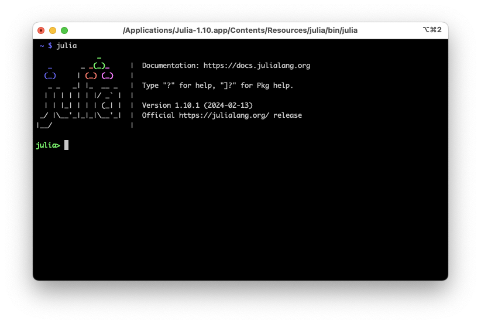

x = 1.01.0This chapter briefly reviews essential elements of the Julia programming language. Its main aim is to present all language elements used later in the book, keep it somewhat self-contained, and bring all readers onto the same page. This chapter could also serve as a crash course in Julia for readers experienced in other programming languages, such as Python or C++. We will cover the following topics:
The style of this chapter is quite different from the rest of the book in that it just sketches some aspects of the language with basic examples but without developing comprehensive use case scenarios or explaining any of the concepts in depth. Should readers encounter any unfamiliar concepts, it is recommended to consult the Julia manual or any other introductory Julia book of their liking to fill the gaps.
In order to run the examples in this and the following chapters, you need to install Julia from (https://julialang.org/downloads/). All code examples have been tested with Julia v1.10.
As with any other programming language, any text editor can be used to write and edit Julia code. There are plugins for code highlighting and extended language support for vi, Emacs, and most other common editors. At the time of writing, Visual Studio Code (https://code.visualstudio.com/) has become Julia’s de facto standard integrated development environment.
Code can be executed on the command line by calling the Julia interpreter together with the name of a source file:
julia myscript.jlAlternatively, code can be typed directly into the interactive REPL (read-eval-print loop) that is invoked by the julia command.

The screenshot in Figure 1.2 shows Julia’s startup prompt and a simple code snippet. We see that code outputs are immediately displayed in the REPL.
Julia code can also be executed within Jupyter Notebooks or by literate programming tools such as Weave (https://github.com/JunoLab/Weave.jl). The Pluto package (https://plutojl.org/) provides a reactive notebook framework that elevates interactivity substantially beyond what is offered by Jupyter. It organizes code in cells like Jupyter, but all dependent code cells are automatically re-run on each variable change. Pluto guarantees that the state of the program is always described by the code you see in the notebook.
This section goes over some basics of writing Julia code. We start with the obvious: Variables are assigned with the = operator:
x = 1.01.0Functions are called using the traditional parenthesis syntax:
cos(0.0)1.0Code blocks are usually enclosed by some keyword like function, for, while or let and end. It is also possible to enclose code blocks with begin and end (cf. the Section on Compound Expressions below), but all of the above constructs come without an explicit begin statement.
The command println writes the text representation of a variable to standard output, followed by a newline:
println(1.0)1.0println("Hello World!")Hello World!Julia has full Unicode support:
println("Greetings. „Åì„Çì„Å´„Å°„ÅØ„ÄÇ ÿߟÑÿ≥ŸÑÿßŸÖ ÿπŸÑŸäŸÉŸÖ. üëã")Greetings. „Åì„Çì„Å´„Å°„ÅØ„ÄÇ ÿߟÑÿ≥ŸÑÿßŸÖ ÿπŸÑŸäŸÉŸÖ. üëãThis applies not only to strings but even to variable and function names and other identifiers:
üê¢ = "turtle"
println(üê¢)turtleSpecial symbols like Greek letters, decorations, and sub- or superscripts can be entered using LaTeX-like backslash notation with tab completion. This works in most environments, including the REPL, Visual Studio Code, and Jupyter Notebooks. For example,
x\hat<tab>\_1<tab> = 2\pi<tab>results in
x̂₁ = 2π6.283185307179586Julia supports Unicode shortcuts for a large number of infix operators and elementary functions, e.g.,
| Short | Long | Name |
|---|---|---|
≠ |
!= |
inequality |
≤ |
<= |
less than or equal to |
≥ |
>= |
greater than or equal to |
∈ |
in |
element of |
∉ |
notin |
not in |
÷ |
div |
truncated division |
√ |
sqrt |
square root |
∛ |
cbrt |
cubic root |
⊗ |
kron |
Kronecker product |
This facilitates code that looks very similar to formulas on paper.
Comments are indicated by #. As seen here, everything following # is ignored:
x = 2 # The first part of the line is executed, but not the comment after #2Multiline comments can be enclosed by #= and =#:
#=
This is a comment.
=#In the next section, we will discuss more details about variables.
We already showed how to assign a value, say 10, to a variable, say x:
x = 1010Variable names are case-sensitive and support Unicode. While they may contain letters (A-Z and a-z), digits 0-9, underscore _, exclamation mark !, and most Unicode symbols, they may only begin with a letter, underscore, and some specific Unicode symbols.
Julia also allows declaring multiple variables at once:
x, y = 7, 11(7, 11)We can do math with x’s and y’s values and assign the result to the variable z:
z = x + y18In Julia, everything is an object, including primitive types like numbers and functions. Variables are just names referencing objects in memory. Thus if we reassign the result of the above addition to the variable x by x = x + y, what happens is that the result is stored in a newly allocated chunk of memory, which is then assigned to the variable x. The previous value of x is still present in memory, albeit without any variable referencing it.
Julia uses garbage collection to free unreferenced memory chunks once it detects that no more references exist.
As Julia is dynamically typed, it is also possible to reassign a variable to a value of another type, e.g., a float,
x = 1.01.0However, it is strongly discouraged to change variable types, as it prevents Julia from generating efficient code. Special care is needed when working with numbers, in order to not accidentally change variable types e.g. between integers and floats. This and many other topics regarding working with numbers in Julia are discussed in the next section.
Julia provides a broader range of primitive numeric types than most languages. In addition to the standard integer and floating point types of various lengths, there are rational, complex, and arbitrary precision numbers. We will now discuss each of these number types in more detail as well as some language features that aid in writing concise code and ensuring type stability.
Julia has signed and unsigned integer types with 8 to 128-bit precision:
| Type | Signed? | Number of bits | Smallest value | Largest value |
|---|---|---|---|---|
Int8 |
✓ | 8 | -2^7 | 2^7 - 1 |
UInt8 |
8 | 0 | 2^8 - 1 | |
Int16 |
✓ | 16 | -2^15 | 2^15 - 1 |
UInt16 |
16 | 0 | 2^16 - 1 | |
Int32 |
✓ | 32 | -2^31 | 2^31 - 1 |
UInt32 |
32 | 0 | 2^32 - 1 | |
Int64 |
✓ | 64 | -2^63 | 2^63 - 1 |
UInt64 |
64 | 0 | 2^64 - 1 | |
Int128 |
✓ | 128 | -2^127 | 2^127 - 1 |
UInt128 |
128 | 0 | 2^128 - 1 |
The default type for an integer depends on the target system’s architecture. On a 32-bit system, typeof(1) results in Int32, whereas on a 64-bit system typeof(1) results in Int64. The aliases Int and UInt refer to the system’s signed and unsigned native integer types, i.e., the command Int when executed on a 32-bit system returns Int32 and on a 64-bit system, it returns Int64. Integer literals that exceed the range of Int32 but lie within the range of Int64 always create 64-bit integers, even if the system type is 32 bits. Thus the following code creates an Int64 independent of whether it is executed on a 32-bit or 64-bit system:
typeof(3000000000)Int64The typemin and typemax functions return the minimum and maximum representable values of primitive numeric types such as integers:
(typemin(Int32), typemax(Int32))(-2147483648, 2147483647)The values returned by typemin and typemax are always of the given argument type, e.g., Int32 in the example above. Exceeding the maximum representable value of a given type results in a wraparound behavior (type overflow) that reflects the characteristics of the underlying integer arithmetic as implemented on modern computers:
x = typemax(Int64)9223372036854775807x + 1-9223372036854775808x + 1 == typemin(Int64)trueThe standard division / will always return a float, even when dividing, e.g., 4 and 2:
4 / 22.0The div function and the ÷ operator perform integer division:
4 ÷ 22Integer division by zero and dividing the lowest negative number (typemin) by -1 throws a DivideError. The remainder and modulus functions, rem and mod, throw a DivideError when their second argument is zero.
Julia has three built-in floating-point types:
| Type | Precision | Number of bits |
|---|---|---|
Float16 |
half | 16 |
Float32 |
single | 32 |
Float64 |
double | 64 |
Floating-point literals are denoted in the standard formats using . as a decimal separator and e and f in engineering notation:
1.01.01.1.0.50.51e101.0e10-2.5e-4-0.00025These are all Float64 values; Float32 values are entered by writing an f in place of e:
0.5f00.5f02.5f-40.00025f0Unlike Int, there is no type alias Float for a specifically sized float depending on the machine architecture.
Unlike integer registers, where the size of Int reflects the size of a native pointer on that machine, the floating point register sizes are specified by the IEEE-754 standard.
Floating-point numbers have two zeros: positive zero and negative zero. These are equal when compared to each other, but they have different binary representations, which can be seen with the bitstring function
0.0 == -0.0truebitstring(0.0)"0000000000000000000000000000000000000000000000000000000000000000"bitstring(-0.0)"1000000000000000000000000000000000000000000000000000000000000000"For each floating point type, Julia provides three standard floating-point values for positive and negative infinity as well as not a number:
Float16 |
Float32 |
Float64 |
Name | Description |
|---|---|---|---|---|
Inf16 |
Inf32 |
Inf |
positive infinity | a value larger than all finite floating-point values |
-Inf16 |
-Inf32 |
-Inf |
negative infinity | a value smaller than all finite floating-point values |
NaN16 |
NaN32 |
NaN |
not a number | a value that cannot be represented by any floating-point value |
These floating-point values arise as the results of certain arithmetic operations, which is most easily seen in examples:
1/0Inf-5/0-Inf0.000001/0Inf0/0NaN500 + InfInf500 - Inf-InfInf + InfInfInf - InfNaNInf * InfInfInf / InfNaN0 * InfNaN1 / Inf0.0The typemin and typemax functions also apply to floating-point types:
(typemin(Float16),typemax(Float16))(-Inf16, Inf16)(typemin(Float32),typemax(Float32))(-Inf32, Inf32)(typemin(Float64),typemax(Float64))(-Inf, Inf)Most real numbers cannot be represented exactly with floating-point numbers. The distance between two adjacent representable floating point numbers is defined as the machine epsilon. The command eps gives the distance between 1.0 and the next larger representable floating point value:
eps(Float32) # 2.0^-231.1920929f-7eps(Float64) # 2.0^-522.220446049250313e-16eps() # same as eps(Float64)2.220446049250313e-16eps can also take a floating-point value as an argument and gives the absolute difference between that value and the next representable floating-point value:
eps(1.0)2.220446049250313e-16eps(1E3)1.1368683772161603e-13eps(1E-27)1.793662034335766e-43eps(0.0)5.0e-324While most programming languages support floating point numbers to various precision, native support for rational numbers is provided by only a few languages.
Julia provides a native type for the representation of rational numbers, that is the ratio of two integers. They are constructed using the // operator:
2//32//3Rational numbers are automatically reduced to their simplest form, i.e., the numerator and denominator are always divided by their highest common factor:
6//92//3The denominator is always non-negative:
5//-15-1//3The numerator and denominator of a rational can be extracted with the corresponding functions:
numerator(2//3)2denominator(2//3)3With the float function, rationals can be converted to floating-point numbers:
float(3//4)0.75In addition to rational numbers, Julia also provides native support for complex numbers.
Julia provides complex number types with support for all the standard mathematical operations. The complex number type is fully general and can represent a complex version of any other number, e.g., float, integer, or even rational, but as in most applications complex numbers are floats, Julia provides shortcuts for these types:
| Type | Precision | Number of bits |
|---|---|---|
ComplexF16 |
half | 16 |
ComplexF32 |
single | 32 |
ComplexF64 |
double | 64 |
The imaginary part is denoted with the global constant im, representing the complex number i, which allows writing complex numbers in a very similar way to the mathematical notation (see below for details on the juxtaposition of numeric literals):
1+2im1 + 2imComplex numbers can be built from all the other number types:
typeof(1//2 + 3//4im)Complex{Rational{Int64}}All standard arithmetic operations and elementary functions can be applied to complex numbers:
(1 + 2im) + (1 - 2im)2 + 0im(1 + 2im) * (2 - 3im)8 + 1imexp(1 + 2im)-1.1312043837568135 + 2.4717266720048188imsqrt(1 + 2im)1.272019649514069 + 0.7861513777574233imThe usual functions can be used to manipulate complex values:
real(1 + 2im)1imag(1 + 2im)2conj(1 + 2im)1 - 2imabs(1 + 2im)2.23606797749979Most computations can be carried out using integers, floats, rationals, or complex numbers. However, sometimes the precision offered by these standard types is not sufficient.
Julia provides support for computations in arbitrary precision, in particular for numbers that go beyond the precision natively supported by hardware, usually 32 or 64 bits, by wrapping the GMP library (GNU Multiple Precision Arithmetic Library) and the GNU MPFR library (multiple-precision floating-point computations with correct rounding). The BigInt and BigFloat types hold arbitrary precision integer and floating point numbers. These types can be created from primitive numerical types
BigInt(typemax(Int64)) + 19223372036854775808BigFloat(2.0^66) / 32.459565876494606882133333333333333333333333333333333333333333333333333333333344e+19or from strings using the big or parse functions
big"123456789012345678901234567890" + 1123456789012345678901234567891parse(BigInt, "123456789012345678901234567890") + 1123456789012345678901234567891big"1.23456789012345678901"1.234567890123456789010000000000000000000000000000000000000000000000000000000004parse(BigFloat, "1.23456789012345678901")1.234567890123456789010000000000000000000000000000000000000000000000000000000004The Julia ecosystem provides several packages implementing quadruple or higher precision floating point numbers. This includes ArbNumerics.jl, DecFP.jl, DoubleFloats.jl, MultiFloats.jl, and Quadmath.jl. Most of these packages outperform BigFloat from the Julia standard library for quadruple precision, often by one or two orders of magnitude. At the time of writing, DoubleFloats and MultiFloats appear to be the packages with the best overall performance and feature completeness.
Numeric literals represent primitive numbers in code, e.g., 1 for an integer literal and 1.0 for a floating-point literal. In Julia, variables can be preceded by a numeric literal, implying multiplication. This leads to clearer expressions and shorter numeric formulae that more closely resemble their counterparts on paper. For example, polynomials can be expressed in a very clean way:
x = 3
y = 9x^2 + 6x + 1100Similarly, simple products in the exponential can be written without brackets:
2^2x64This works not only with variables but also with parenthesized expressions:
6(x+1)^2 + 3(x+1) - 8100Vice versa, parenthesized expressions can also be coefficients to variables:
(x+1)x12While this is very convenient, there are a few pitfalls one needs to be aware of when using juxtaposition like this. Whitespaces are not allowed between numeric literals and variables or parenthesized expressions:
(x+1) xERROR: ParseError:
(x+1) x
# └┘ ── extra tokens after end of expression
Stacktrace:
[1] top-level scope
@ none:1When immediately followed by a parenthetical, any expression other than a numeric literal is interpreted as a function, and the values in parentheses as its arguments. Thus, a parenthesized expression cannot immediately follow a variable:
x(x+1)LoadError: MethodError: objects of type Int64 are not callable
Maybe you forgot to use an operator such as *, ^, %, / etc. ?Similarly, two parenthesized expressions cannot follow each other without explicitly specifying an operator:
(x+1)(x-1)LoadError: MethodError: objects of type Int64 are not callable
Maybe you forgot to use an operator such as *, ^, %, / etc. ?It is important to be aware that juxtaposed literal coefficient syntax may conflict with another syntax, such as engineering notation for floating-point literals. Such ambiguities are always resolved in favor of interpretation as numeric literals, e.g., in a code snippet like
e10 = 10
2e102.0e10The expression starting with a numeric literal followed by e is always interpreted as a floating point literal, not as the numeric literal 2 multiplied by the variable e10.
To avoid type conversions or even type instabilities, it is sometimes necessary to ensure that a given variable is initialized with the literal 0 or 1 of a given type, which is either specified explicitly or implicitly as the type of a given variable. The functions zero and one do precisely this: they return the literal 0 and 1 corresponding to the type in the argument or the type of the argument, e.g.
zero(Float32)0.0f0one(Int32)1zero(1.0)0.0one(0)1At first, the use of zero and one may seem a bit laborious. However, the great advantage is that it facilitates very generic code, that can operate on standard number types such as integers and floats, but also rationals and complex numbers, and even vectors or dual numbers as they are used in automatic differentiation packages such as ForwardDiff (https://github.com/JuliaDiff/ForwardDiff.jl).
In the next section, we discuss some of Julia’s data structures for collecting and organizing data.
Julia provides several standard data structures, such as tuples, named tuples, dictionaries, and strings. In the following, we will briefly review those types and how to create and use them.
A tuple is a fixed-length container that can hold multiple values of arbitrary type. Tuples are immutable, i.e., they cannot be modified once created. However, if they contain mutable values (like arrays), their content may still be modified (e.g., the elements of an array). Tuples are constructed by providing a list of values separated with commas and enclosed in parentheses:
x = (0.0, "hello", 6*7)(0.0, "hello", 42)A tuple’s elements are accessed via square brackets:
x[2]"hello"Tuples can be unpacked into separate variables:
x1, x2, x3 = x(0.0, "hello", 42)x2"hello"If a tuple with only one element shall be created, it must be written with a comma,
(1,)(1,)since (1) would denote a parenthesized value
(1)1The expression () represents the empty (length-0) tuple:
()()While tuples are just an ordered collection of variables, Julia also allows for assigning a name to each entry of the collection.
As the name suggests, a NamedTuple is a tuple whose components are named
x = (a = 42, b = 2^8, c = 2π)(a = 42, b = 256, c = 6.283185307179586)Fields of named tuples can be accessed by their name using the dot syntax
x.a42Similar to tuples, named tuples can be unpacked into separate variables
x1, x2, x3 = x(a = 42, b = 256, c = 6.283185307179586)x142The package Parameters.jl allows for selectively unpacking named tuples by the @unpack macro
using Parameters
@unpack a, b = x(a = 42, b = 256, c = 6.283185307179586)a42cLoadError: UndefVarError: `c` not definedNamed tuples are immutable, i.e., values can neither be changed nor added or removed, and keys are always symbols. The types of all elements are stored as part of an instance of a named tuple:
typeof((a = 2, b = 3.))@NamedTuple{a::Int64, b::Float64}This means that return types are always well-defined, which allows the Julia compiler to generate very efficient code around named tuples. However, this comes at a price as their immutability makes named tuples rather rigid. A more flexible (but often less performant) alternative is provided by dictionaries.
Dictionaries map between a collection of keys and a collection of values, where each key is associated with a single value. In Julia, both keys and values can be of any type. Dictionaries can be initialized with key-value pairs using the arrow => syntax:
mydict = Dict("one" => 1, 2 => 2., :three => 3+0im)Dict{Any, Number} with 3 entries:
2 => 2.0
:three => 3+0im
"one" => 1In contrast to tuples and named tuples, dictionaries are not ordered, i.e., the values of a dictionary may appear in a different order as was used for initialization.
If the function Dict is called without arguments, it creates a new dictionary with no items, which can be added using index notation:
mydict = Dict()
mydict["one"] = 11Elements of a dictionary can be accessed with the same index notation:
mydict["one"]1The keys and values functions return collections of all keys and all values
keys(mydict)KeySet for a Dict{Any, Any} with 1 entry. Keys:
"one"When a dictionary is constructed, it stores the common supertype of the elements used to initialize the dictionary:
typeof(Dict("one" => 1, "two" => 2, "three" => 3))Dict{String, Int64}typeof(Dict("one" => 1, "two" => 2//3, "three" => 3.))Dict{String, Real}The first parameter of the Dict type is the common supertype of all keys, the second parameter is the common supertype of all values. In the first example, all values are integers, therefore the common value type is Int64. In the second example, the values are of different number types, which however share a common supertype Real, i.e., they are all real numbers.
This behavior restricts the type of elements that can be added to a dictionary. If we have a dictionary of real numbers and add another real number, there is no issue:
mydict = Dict("one" => 1, "two" => 2//3, "three" => 3.)
mydict["four"] = 4
mydictDict{String, Real} with 4 entries:
"two" => 2//3
"four" => 4
"one" => 1
"three" => 3.0However, if we try to add a string to the same dictionary, we find that this is not allowed:
mydict["five"] = "five"LoadError: MethodError: Cannot `convert` an object of type String to an object of type Real
Closest candidates are:
convert(::Type{T}, ::T) where T<:Number
@ Base number.jl:6
convert(::Type{T}, ::T) where T
@ Base Base.jl:84
convert(::Type{T}, ::AbstractChar) where T<:Number
@ Base char.jl:185
...Similarly, in the example above all keys are strings. If we try to add a new entry with a different key type, Julia throws an exception:
mydict[5] = 5LoadError: MethodError: Cannot `convert` an object of type Int64 to an object of type String
Closest candidates are:
convert(::Type{String}, ::Base.JuliaSyntax.Kind)
@ Base /Users/julia/.julia/scratchspaces/a66863c6-20e8-4ff4-8a62-49f30b1f605e/agent-cache/default-honeycrisp-XG3Q6T6R70.0/build/default-honeycrisp-XG3Q6T6R70-0/julialang/julia-release-1-dot-10/base/JuliaSyntax/src/kinds.jl:975
convert(::Type{String}, ::String)
@ Base essentials.jl:321
convert(::Type{T}, ::T) where T<:AbstractString
@ Base strings/basic.jl:231
...When an empty dictionary is constructed, it allows for storing keys and entries of any type:
Dict()Dict{Any, Any}()However, the types can be constrained by explicitly specifying them:
Dict{String,Float64}("one" => 1, "two" => 2//3, "three" => 3.)Dict{String, Float64} with 3 entries:
"two" => 0.666667
"one" => 1.0
"three" => 3.0If the types do not match the specified values, Julia tries to convert them appropriately. If this is not possible, an exception will be raised.
As dictionaries can hold any type, they often do not have a predefined return type. This can lead to inefficient code when dictionaries are evaluated e.g. within a loop. We will come back to this issue in Chapter 10 on Performance and Introspection.
In the next subsection, we will discuss another standard data type, namely strings.
In Julia, strings are stored in the String type, which provides full Unicode support in the UTF-8 encoding. Strings are immutable, so a new string must be created to change a string. As in most other languages, strings are created by enclosing string literals with double quotes:
str = "Hello, world.""Hello, world."Strings can also be enclosed by triple double quotes:
"""This string says "Hello" to the world.""""This string says \"Hello\" to the world."This is convenient e.g. when strings contain quotes as it avoids the need to escape them. Triple quotes are also the preferred way of enclosing multi-line strings:
"""
This
string
has
many
lines.
""""This\nstring\nhas\nmany\nlines.\n"Single characters or substrings can be extracted from a string using index syntax:
str[begin]'H': ASCII/Unicode U+0048 (category Lu: Letter, uppercase)str[5]'o': ASCII/Unicode U+006F (category Ll: Letter, lowercase)str[8:12]"world"Other types can be converted to strings using string:
string(42)"42"Concatenation can be achieved by passing several arguments to string:
string("I am ", 10, " years old.")"I am 10 years old."or by using the * operator:
"Hello" * ", " * "world""Hello, world"Julia allows interpolation into string literals using $:
age = 10
"I am $age years old.""I am 10 years old.""Next year, I will be $(age+1).""Next year, I will be 11."Internally, Julia calls the string function to convert variables into string form when they are interpolated into other strings.
In Julia, a function starts with the function keyword, followed by the function name and a tuple of argument values, and ends with end. The following function accepts two arguments, x and y, and returns their sum x + y:
function mysum(x,y)
x + y
endmysum (generic function with 1 method)Functions always return the value of the last expression evaluated. The return keyword is also available so that the above function can be equivalently written as
function mysum(x,y)
return x + y
endmysum (generic function with 1 method)However, in this example, the return keyword is unnecessary. It is rather used to break out of conditional branches with different return values. If a function does not need to return a value, it should return the value nothing:
function printx(x)
println("x = $x")
return nothing
end
printx(2)x = 2Julia also supports a compact assignment form for defining a function
mysum(x,y) = x + ymysum (generic function with 1 method)In this form, the function must consist of a single expression. This is typical for functional programming, which is one of the paradigms embraced by Julia, and this short “single-line” function syntax can be found in many Julia codes.
Function names can contain Unicode characters:
∑(x,y) = x + y∑ (generic function with 1 method)Functions are called with the traditional parenthesis syntax:
mysum(2,3)5∑(2,3)5In Julia, values are passed to functions by sharing. Function arguments act as new variable bindings to the existing values, but the values themselves are not copied when passed to a function. Therefore, any modifications to mutable values by a function will also affect the caller.
The expression mysum, without parentheses, refers to the actual function object and can be manipulated like any other value. For example, it can be assigned to a different variable
myfunc = mysummysum (generic function with 1 method)myfunc(2,3)5By default, functions return the last expression evaluated in the function body. The return keyword can be used to return immediately, providing an expression whose value is returned
function myprod(x,y)
return x * y
x + y
end
myprod(2,3)6Sometimes it is useful or even necessary to specify a return type, e.g., to avoid type instabilities. To this end, the :: operator can be used in the function declaration:
function myprod(x,y)::Float64
x * y
end
myprod(2,3)6.0If a function needs to return multiple values, one just returns a tuple of values. To create and destructure tuples, it is not necessary to write parentheses:
function foo(a,b)
a+b, a*b
end
foo(2,3)(5, 6)Tuple destructuring or unpacking refers to extracting each value of the tuple into a separate variable:
x, y = foo(2,3)(5, 6)x5y6We will now discuss a special kind of function, namely operators.
Julia provides a large number of infix operators, which are functions with support for special syntax where the operator is placed between operands:
1 + 2 + 36The same function can be called with the usual parenthesized list of arguments:
+(1,2,3)6Both forms, infix and function application, are equivalent. Internally, the former is parsed to call the latter. This implies that operators such as + and * are objects just like other functions and can be treated accordingly:
plus = ++ (generic function with 189 methods)plus(1,2,3)6However, infix notation only works with the original operator name or symbol.
Although not infix operators, we want to mention here several special expressions, that are mapped to specific function calls in a similar way to operators:
| Expression | Call |
|---|---|
A' |
adjoint |
A[i] |
getindex |
A[i] = x |
setindex! |
A.n |
getproperty |
A.n = x |
setproperty! |
A decisive feature of Julia is that for such expressions and operators (and there are many!), there is no distinction between those that come with the language and those that are defined by the user. Thus e.g. indexing with the square bracket notation is available to all user types as long as proper getindex and setindex! methods are provided.
Anonymous functions are functions that are not given an explicit name. They are defined by prescribing a map from inputs to outputs with the -> operator:
x -> 9x^2 + 6x + 1#11 (generic function with 1 method)Here, x is the function’s argument, and 9x^2 + 6x + 1 is the function body and thus the function’s return value. Anonymous functions are like normal functions but with a compiler-generated name. They can be assigned to variables which can then be called like any other function:
poly = x -> 9x^2 + 6x + 1
poly(1)16Anonymous functions are primarily used for passing them to functions that take other functions as arguments. A common example of this is the map function. It applies a function to each value of an iterable like a tuple and returns a new tuple holding the resulting values:
map(x -> 9x^2 + 6x + 1, (1, 2, 3))(16, 49, 100)If the function should be applied to each value without returning a new tuple, the foreach function can be used:
foreach(x -> println(9x^2 + 6x + 1), (1, 2, 3))16
49
100To define an anonymous function that accepts multiple arguments, tuple notation is used:
multi = (x,y,z) -> 3x + y - 2z
multi(1,2,3)-1The same notation can be used for an anonymous function without arguments:
printhi = () -> println("Hi!")
printhi()Hi!If an anonymous function requires multiple lines, the function body can be enclosed by begin and end, but cleaner code can be written with the do keyword:
map([-1, .5, 2]) do x
if x ≤ 0
return zero(x)
elseif x ≤ 1
return one(x)
else
return x
end
end3-element Vector{Float64}:
0.0
1.0
2.0Here, the syntax do x creates an anonymous function with one argument x and passes it as the first argument to map. Similarly, do a, b creates a two-argument anonymous function, and a plain do declares an anonymous function that takes no arguments. If this behavior is desired for a custom function, this function requires a method that takes a function as the first argument:
function printmap(f::Function, vals)
for x in vals
printx(f(x))
end
end
printmap([-1, .5, 2]) do x
if x ≤ 0
return zero(x)
elseif x ≤ 1
return one(x)
else
return x
end
endx = 0.0
x = 1.0
x = 2.0While this example may appear somewhat contrived, there are many useful applications of this paradigm, e.g., for opening a file, performing some user-specified code on the file, and ensuring that the file is closed afterward. This behavior is implemented in Julia’s own open command.
It has a version that runs code ensuring that the opened file is eventually closed:
open("outfile", "w") do io
write(io, data)
endThis is accomplished by the following definition:
function open(f::Function, args...)
io = open(args...)
try
f(io)
finally
close(io)
end
endopen (generic function with 1 method)Here, open opens the file for writing and then passes the resulting output stream to the anonymous function defined in the do ... end block. After the function exits, open ensures the stream is closed, regardless of whether the function exited normally or threw an exception.
It is often convenient to write functions that take an arbitrary number of arguments, so-called varargs functions. In Julia, varargs functions are defined by following the last argument with an ellipsis
bar(a,b,x...) = (a,b,x)bar (generic function with 1 method)The variables a and b are bound to the first two argument values as usual, while the variable x is bound to an iterable collection of the zero or more values passed to bar after its first two arguments:
bar(1,2)(1, 2, ())bar(1,2,3)(1, 2, (3,))bar(1,2,3,4)(1, 2, (3, 4))In all these cases, x is bound to a tuple of the trailing values passed to bar.
The values contained in an iterable collection can also be “splatted” into a function call as individual arguments, for which one also uses ... but in the function call:
x = (2, 3, 4)(2, 3, 4)bar(1,2,x...)(1, 2, (2, 3, 4))bar(1,x...)(1, 2, (3, 4))The iterable object splatted into a function call does not need to be a tuple, but it can be any iterable, e.g., a vector:
x = [3, 4]
bar(1, 2, x...)(1, 2, (3, 4))The function that arguments are splatted into does not need to be a varargs function
baz(a, b) = a + b
baz(x...)7But the size of the splatted object and the number of arguments a function takes need to match:
baz(rand(3)...)LoadError: MethodError: no method matching baz(::Float64, ::Float64, ::Float64)
Closest candidates are:
baz(::Any, ::Any)
@ Main In[160]:1After discussing functions with an arbitrary number of arguments, we will move on to optional arguments.
Function arguments can have default values, which allows for omitting them in a function call:
increase(x, a=1) = x+aincrease (generic function with 2 methods)This created a function with two methods. Thus optional arguments are just a convenient syntax for writing multiple method definitions with different numbers of arguments at once. The above definition allows for calling the function with either one or two arguments, and 1 is automatically passed when the second argument is not specified:
increase(4)5increase(4, 2)6A particularly useful feature is that default values can refer to other arguments with evaluation from left to right
increase(x, a=x) = x+a
increase(4)8Lastly, arguments can also be passed via keywords.
Keyword arguments are useful, for example, if a function takes many arguments, making it difficult to remember their order and how to call such functions. Identifying arguments by their name instead of their position makes it much easier to use complex interfaces.
When defining a function, keyword arguments are separated from non-keyword arguments by a semicolon:
function plot(x, y; color, linestyle="solid", linewidth=1)
# ...
end;The function plot takes two positional arguments, x and y, and three keyword arguments, color, linestyle, and linewidth. As no default value is assigned to color, it is required to be specified by the user:
plot(3, 5; color=:black)plot(3, 5)LoadError: UndefKeywordError: keyword argument `color` not assignedWhen the function plot is called, the semicolon is optional: one can call plot(3, 5, color=:black) or plot(3, 5; color=:black). An explicit semicolon is required only for passing varargs or computed keywords. Similar to varargs functions, extra keyword arguments can be collected using ...:
function plot(x, y, z; kwargs...)
# ...
end;Now that we have learned about the different ways of passing arguments to a function, we will discuss how to build new functions out of existing functions by composition.
Julia allows combining functions by composition with the ∘ operator:
(log ∘ exp)(2)2.0is the same as
log(exp(2))and
(sqrt ∘ +)(3, 6)3.0is the same as
sqrt(3 + 6)3.0The inner function’s return values are the outer function’s arguments. In the REPL and suitably-configured editors, the composition operator can be typed using \circ<tab>.
Composition can also be expressed by function chaining, that is piping the output from one function to the input of the next function using the |> operator:
1:10 |> sum |> sqrt7.416198487095663The result of applying sum to 1:10 is passed to the sqrt function. This is equivalent to the composition
(sqrt ∘ sum)(1:10)7.416198487095663Another useful feature for extending the applicability of functions is the so-called dot syntax.
In Julia, functions can easily be vectorized using the dot syntax. This means that a function f(x) is applied to each element of a collection A (like a tuple or array) with the syntax f.(A). The result is stored in a new collection of the same type, here a tuple:
X = (1.0, 2.0, 3.0)
Y = (4.0, 5.0, 6.0)
sin.(π .* X)(1.2246467991473532e-16, -2.4492935982947064e-16, 3.6739403974420594e-16)Internally f.(args...) is equivalent to broadcast(f, args...), which allows operating on multiple collections and even collections of different shapes or a mix of collections and scalars:
func(x,y) = 3x + 4y
func.(π, X)(13.42477796076938, 17.42477796076938, 21.42477796076938)func.(X, Y)(19.0, 26.0, 33.0)Nested f.(args...) calls are fused into a single broadcast loop:
sin.(cos.(X))(0.5143952585235492, -0.4042391538522658, -0.8360218615377305)is equivalent to
broadcast(x -> sin(cos(x)), X)(0.5143952585235492, -0.4042391538522658, -0.8360218615377305)There is only a single loop over X, and a single tuple is allocated for the result. Adding dots to many operations or function calls in an expression can be tedious and lead to code that is difficult to read. Therefore, the macro @. is provided to convert every function call, operation, and assignment in an expression into the “dotted” version:
@. sin(cos(X))(0.5143952585235492, -0.4042391538522658, -0.8360218615377305)After discussing all important aspects of functions in Julia, we will briefly explore macros, which can be seen as a special kind of functions, that generate code.
Julia features sophisticated runtime code generation and metaprogramming facilities. Many classical languages like C or C++ macros are parsed by a preprocessor, generating or manipulating code that is then interpreted and compiled by the actual compiler. In Julia, code is represented by Julia objects and can thus be generated and manipulated from within the language without an additional preprocessing step.
In the following, we will only explain how to apply macros and how that differs from regular functions, but we will not delve into how to define macros. We will explore Julia’s metaprogramming facilities in more detail in the section on Domain Specific Languages in Chapter 5.
Macros are invoked with the syntax @name expr1 expr2 ... or @name(expr1, expr2, ...), e.g.,
@assert 1 == one(0)Macros act differently from functions. A function takes a number of arguments, performs some operations on them, and returns a result (or nothing). A macro can also take several arguments but returns an expression: Julia’s representation of executable code. This expression is then automatically compiled and executed. Macros execute code at a different level than functions, namely when code is parsed, thus allowing to modify, generate and insert code before the actual code (the expression returned by the macro) is executed.
Julia features many useful macros, e.g., for testing or code introspection. These will be explained in detail later, in Chapter 6 and 10. Now we move on to the different language elements Julia provides to control the flow of a program.
Julia provides most of the control flow mechanisms typical for high-level programming languages: conditional evaluation with if, elseif and else, repeated evaluation with for and while, and exception handling with try and catch, error and throw. Julia does not feature a switch-case like control structure. However, several packages such as MLStyle (https://github.com/thautwarm/MLStyle.jl) provide such structures.
We will start this section with a short overview of compound expressions, that group several subexpressions into a single expression. Then we explain conditionals and related topics such as the ternary operator and short circuit notation before we move on to loops and finally exceptions.
Julia provides multiple ways to generate compound expressions, that is groups of subexpressions that behave like a single expression: begin blocks and ; chains. In both cases, the value that is returned by the compound expressions is the value of the last subexpression:
z = begin
x = 1
y = 2
x + y
end3z = (x = 1; y = 2; x + y)3While begin blocks are typically multiline and ; chains are typically single-line, there is no strict need for this:
begin x = 1; y = 2; x + y end3(x = 1;
y = 2;
x + y)3After compound expressions, we will now move on to conditional expressions.
Conditionals or if-clauses allow branching code into parts that are evaluated and parts that are not evaluated, depending on whether some boolean expression evaluates to true or false.
A typical if-elseif-else conditional has the following form:
if c == :yellow
println("You like yellow. Really?")
elseif c == :blue
println("You like blue. Me too.")
elseif c == :red || c == :green
println("You like red or green. I can't tell the difference.")
else
println("You seem to like some odd color.")
endJulia evaluates the conditional expressions in order until one evaluates to true. Then the corresponding code block is evaluated, and no further conditional expressions are evaluated. A conditional can have arbitrarily many elseif blocks but only one else block, which must be the last. The elseif and else blocks are optional. Conditional expressions can be connected using || (or) and && (and).
Unlike many other languages, in Julia, conditional expressions have to evaluate to either true or false, elsewise an error is thrown, indicating that the conditional returns the wrong type:
if 1
println("true")
endLoadError: TypeError: non-boolean (Int64) used in boolean contextConditional blocks do not introduce a local scope (more on variable scopes below). This means that variables that are newly defined within a block can be used after the conditional expression:
function mycolor(c)
if c == :yellow
comment = "You like yellow. Really?"
elseif c == :blue
comment = "You like blue. Me too."
elseif c == :red || c == :green
comment = "You like red or green. I can't tell the difference."
else
comment = "You seem to like some odd color."
end
println(comment)
end;
mycolor(:pink)You seem to like some odd color.If a variable defined within a block is used later on, all branches must define a value for that variable.
Julia provides a very concise syntax for single-expression if-else statements, the so-called ternary operator ?:, which takes three operands:
a ? b : cThe expression a is a conditional expression, the expression b is evaluated if a is true, and the expression c is evaluated if a is false.
testnegative(x) = println(x < 0 ? "x is negative" : "x is non-negative")
testnegative(-1)x is negativeConditionals with three or more branches can be constructed by chaining multiple uses of the ternary operator. However, this quickly results in hard-to-read code and should thus be avoided.
A typical use of the ternary operator is to discriminate return values:
mymin(x, y) = x < y ? x : ymymin (generic function with 1 method)When chaining boolean expressions with || and &&, Julia evaluates only the minimum number of expressions necessary to determine the final value of the entire chain. In the expression a && b, the subexpression b is only evaluated if a evaluates to true. If a is false, necessarily the whole expression is false and there is no need to evaluate b. In the expression a || b, the subexpression b is only evaluated if a evaluates to false. If a is true, necessarily the whole expression is true and again there is no need to evaluate b.
true && truetruetrue && falsefalsefalse && truefalsefalse && falsefalsetrue || truetruetrue || falsetruefalse || truetruefalse || falsefalseThis behavior can be used to write one-line if statements in a very comprehensive way. The following code
<condition> && <statement>is equivalent to
if <condition>
<statement>
endand
<condition> || <statement>is equivalent to
if ! <condition>
<statement>
endWhile the condition expressions used in the operands of && or || must be boolean values (true or false), any type of expression can be used at the end of a conditional chain.
Julia knows two kinds of loops: for loops and while loops. In while loops, some expression (the loop body) is repeatedly evaluated as long as some conditional expression is true. On the other hand, for loops operate on an iterable container like a tuple or an array. In each loop cycle, they assign a value of the iterable to a loop variable and evaluate the loop body, which typically depends on the loop variable.
The general form of a Julia for loop is as follows:
for <loop variable> = <iterable>
# ...
# loop body
# ...
endThe iterable can be some range like 1:3, representing the sequence of numbers 1, 2, 3:
for i = 1:3
println(i)
end1
2
3Instead of the keyword =, one can also use in or ∈, which often leads to clearer code. The iterable can also be any iterable container, such as a tuple or an array:
for x ∈ (1.0, ℯ, π)
println(x)
end1.0
ℯ
πfor s in ("foo", "bar")
println(s)
endfoo
barThe break keyword can be used to stop the iteration before a for loop cycled through all elements of an iterable:
for j in 1:1000
println(j)
if j >= 2
break
end
end1
2The continue keyword allows for stopping an iteration but continuing the loop, i.e., jumping to the next iteration:
for i in 1:10
if i % 4 != 0
continue
end
println(i)
end4
8Nested loops can be combined into a single loop over the cartesian product of all iterables:
for i in 1:2, j in 3:4
println((i, j))
end(1, 3)
(1, 4)
(2, 3)
(2, 4)There is one difference to nested loops, though: in nested loops, a break statement only exits the innermost loop in which it is called. Here, it exits the entire nest of loops.
Even when combining nested loops, iterables may refer to outer loop variables:
for i in 1:2, j in 1:i
println((i, j))
end(1, 1)
(2, 1)
(2, 2)The pairs function provides a convenient way to loop over key/value pairs of a NamedTuple or Dict:
nt = (a = 23, b = 42)
for (k,v) in pairs(nt)
println("$k => $v")
enda => 23
b => 42Similarly, if one wants to loop over value pairs of two separate iterables (in contrast to the Cartesian product of their values), one can use the zip function:
for (k,v) in zip(keys(nt), values(nt))
println("$k => $v")
enda => 23
b => 42The second kind of loop Julia knows is the while loop.
In Julia, while loops have the form:
while <condition>
# ...
# loop body
# ...
endThe <condition> is some expression that evaluates to either true or false. As long as it is true, the loop body is executed. If <condition> is false when the while loop is executed the first time, the loop body is never executed:
i = 0
while i > 0
println(i)
i += 1
endUnlike for loops, while loops do not define loop variables, i.e., all variables on which the <condition> depends must be defined before the while loop.
Exceptions occur when a program encounters an unexpected condition that prevents it from continuing execution, e.g., a function argument may have a type or value on which a specific operation cannot be executed:
function sqrt_inv(x)
println("We will now compute the square root of the inverse of $x.")
result = sqrt(1 ÷ x)
println("The square root of the inverse of $x is $result.")
return result
end
sqrt_inv(0)We will now compute the square root of the inverse of 0.
LoadError: DivideError: integer division errorJulia supports different types of exceptions that allow for discriminating the reason for a program interruption and usually contain a diagnostic error message that helps to track down the problem.
ArgumentErrorBoundsErrorCompositeExceptionDimensionMismatchDivideErrorDomainErrorEOFErrorErrorExceptionInexactErrorInitErrorInterruptExceptionInvalidStateExceptionKeyErrorLoadErrorOutOfMemoryErrorReadOnlyMemoryErrorRemoteExceptionMethodErrorOverflowErrorMeta.ParseErrorSystemErrorTypeErrorUndefRefErrorUndefVarErrorStringIndexErrorIf, for example, the sqrt function is applied to a negative real value, it does not just throw a generic ErrorException, but instead, it throws a DomainError:
sqrt(-1)LoadError: DomainError with -1.0:
sqrt was called with a negative real argument but will only return a complex result if called with a complex argument. Try sqrt(Complex(x)).Julia’s error messages are typically quite explanatory and often provide a possible solution to the problem at hand. It is also possible to define custom exception types:
struct GridError <: Exception endExceptions interrupt the normal control flow and terminate a program unless it features specific code to handle such exceptional conditions.
The try and catch statements allow for testing if a code section throws an exception and handling the exception if necessary to not crash the code:
try
# ...
# Code that is expected to sometimes throw an exception
# ...
catch
# ...
# Code to handle exceptions
# ...
endExceptions can be handled in different ways, e.g., by logging them, printing out an error statement, or returning a placeholder value. In the following example, the sqrt function throws an exception. Placing a try/catch block around it allows for mitigating this issue:
try
sqrt(-1)
catch
println("You cannot compute the square root of just anything!")
endYou cannot compute the square root of just anything!The exception can also be assigned to some variable, e.g., to implement different behavior depending on the type of the Exception:
sqrt_inv(x) = try
sqrt(1 ÷ x)
catch e
if isa(e, DivideError)
println("DivideError: dividing by zero is usually not a good idea.")
elseif isa(e, DomainError)
println("DomainError: you could try sqrt(complex(1 ÷ x, 0)) instead.")
end
end
sqrt_inv(1)1.0sqrt_inv(0)DivideError: dividing by zero is usually not a good idea.sqrt_inv(-1)DomainError: you could try sqrt(complex(1 ÷ x, 0)) instead.The try/catch syntax has the disadvantage of being much slower than conditional branching. This is not a problem, e.g., when opening a file and checking for an error. However, it can quickly become a bottleneck in numerical computations, e.g., when a function that is called many times from within a loop features a try/catch clause. If it is clear from the outset, when certain exceptions occur, these can also be handled with a simple if-elseif-else clause:
function sqrt_inv(x)
if x == 0
println("Dividing by zero is usually not a good idea.")
elseif x < 0
println("x is outside the domain. You could try sqrt(complex(1 ÷ x, 0)) instead.")
else
return sqrt(1 ÷ x)
end
return NaN
end
sqrt_inv(0)Dividing by zero is usually not a good idea.
NaNSince Julia v1.8, it is also possible to run a code block only in the event that no exception is thrown in the try block. This can be done with an else clause:
try
# ...
# Code that is expected sometimes to throw an exception
# ...
catch
# ...
# Code to handle exceptions
# ...
else
# ...
# Code that is run if no exception occurs
# ...
endIt is often necessary to run some code regardless of an exception being thrown or not, e.g., for closing a file. For this task, Julia provides the finally keyword:
try
# ...
# Code that is expected sometimes to throw an exception
# ...
finally
# ...
# Code that is executed after try or try/catch block
# ...
endWhen only a try block is present, the finally block is executed whenever the try block is left, e.g., due to an exception, a return statement, or just after finishing normally. When finally follows a try/catch block, it either runs after the try block is exited normally or, if an exception occurs, after the catch block handles the exception.
An exception can be triggered with the throw keyword. In our sqrt_inv example, we could throw a DivideError if the argument is zero:
function sqrt_inv(x)
x == 0 && throw(DivideError())
println("Computing the square root of the inverse of $x.")
sqrt(1 ÷ x)
end
sqrt_inv(0)LoadError: DivideError: integer division errorThis example is somewhat contrived as the div function would also throw a DivideError exception.
Note that DivideError without parentheses is not an exception but a type of exception that needs to be called to obtain an actual Exception object:
typeof(DivideError()) <: Exceptiontruetypeof(DivideError) <: Exceptionfalsetypeof(DivideError)DataTypeMost exception types take one or more arguments that are used for error reporting by providing additional information on where and why an error occurred. In our sqrt_inv example, we could throw a TypeError if the argument is not a Number:
function sqrt_inv(x)
typeof(x) <: Number || throw(TypeError(:sqrt_inv, "", Number, x))
sqrt(1 ÷ x)
end
sqrt_inv("10")LoadError: TypeError: in sqrt_inv, expected Number, got a value of type StringThe rethrow keyword can be used to continue propagating an exception from within a catch block, such as if it had not been caught:
sqrt_inv(x) = try
sqrt(1 ÷ x)
catch e
if isa(e, DivideError)
println("DivideError: dividing by zero is usually not a good idea.")
return NaN
else
rethrow()
end
end
sqrt_inv(1)1.0sqrt_inv(0)DivideError: dividing by zero is usually not a good idea.
NaNsqrt_inv(-1)LoadError: DomainError with -1.0:
sqrt was called with a negative real argument but will only return a complex result if called with a complex argument. Try sqrt(Complex(x)).Julia provides a shortcut for raising a generic ErrorException by the error function, which takes an error message as an argument:
sqrt_inv(x) = x == 0 ? error("You shall not invert zeros!") : sqrt(1 ÷ x)
sqrt_inv(0)LoadError: You shall not invert zeros!The error function interrupts the normal control flow and stops the execution of the code unless some try/catch block catches the ErrorException.
Julia has a large ecosystem of packages for almost all aspects of scientific computing and beyond. It has a built-in package manager that makes it very easy to install, update and remove packages, keep track of package dependencies, and resolve them. This is one of the major advantages of Julia over legacy languages such as C, C++, or Fortran: using external packages is painless. There is no need to build complicated make chains, resolve linking issues, or anything the like. More details on that can be found in Chapter 6 on Package Development.
Julia’s package Manager, Pkg, comes with its own REPL. It is accessed by pressing ] on the Julia REPL. To return to the Julia REPL, press backspace or ^C. Upon entering the Pkg REPL, the prompt should look like this:
(@v1.9) pkg>The Pkg REPL features interactive help, which is accessed by ?:
(@v1.9) pkg> ?It displays a list of the available commands along with short descriptions. Preceding a specific command with ? provides more information on that command:
(@v1.9) pkg> ?developPackages can be installed using the add command:
(@v1.9) pkg> add PlotsIt is possible to specify multiple packages at once:
(@v1.9) pkg> add StaticArrays OffsetArraysPackages can also be installed by specifying their repository’s URL:
(@v1.9) pkg> add https://github.com/JuliaPlots/Plots.jlThis is useful for unregistered packages not listed in Julia’s package registry. Local packages can be installed by specifying their path:
(@v1.9) pkg> add ../MyPackageA specific version of a package can be installed by appending the version number after the @ symbol:
(@v1.9) pkg> add Plots@1.35Similarly, a specific branch of a package can be installed by appending the branch name after the # symbol:
(@v1.9) pkg> add ../MyPackage#my-dev-branchA specific commit can be installed by replacing the branch name with the commit hash. The command free is used to go back to the default version of the package:
(@v1.9) pkg> free MyPackageIf a package is added with the add command, even a local package or a development branch, Julia will install the last version committed with git. If, instead, the current version on the file system, possibly containing uncommitted changes, should be used, the package has to be added with the dev command:
(@v1.9) pkg> dev ../MyPackagePackages are removed with the rm command, which, like add, allows for specifying one or more packages at once:
(@v1.9) pkg> rm StaticArrays OffsetArraysThe status command (or short st) lists all packages that were manually added, i.e., it does not show dependencies that were installed automatically by the package manager,
(@v1.9) pkg> statusTo see all installed packages, the -m flag needs to be passed to status:
(@v1.9) pkg> st -mThe update command (or short up) updates all installed packages:
(@v1.9) pkg> updateIf only a specific package should be updated, its name can be passed to update as an argument:
(@v1.9) pkg> update PlotsAfter we installed a new package, we also need to know how to use it.
Julia features two commands to load packages, using and import. Both can be called either on the package itself or with specific symbols defined in the package. When calling
using MyModuleall names (functions, macros, variables, constants) that are exported by the package are made available in the current namespace. Calling
using MyModule: x, pmakes only specific symbols, here x and p, available in the current namespace. When calling
import MyModuleall symbols in the package are made accessible, but they are not imported into the current namespace. Therefore symbols can only be accessed by explicitly specifying them with the package name, e.g., MyModule.x, but not via x alone. Another difference between using and import is that functions imported with using cannot be extended with new methods. Methods can only be added to functions imported with import.
In addition to installing, updating, and removing packages, Julia’s package manager also offers powerful facilities for managing dependencies and setting up environments. In essence, any folder can host a Julia environment. Starting Julia with the --project=<path> argument specifies to use the environment defined in <path>. The shortcut julia --project for julia --project=. uses the current directory as the environment. Two files define an environment, Project.toml and Manifest.toml. In Project.toml, metadata and all explicit dependencies are listed, possibly with compatibility information, that restricts the allowed version of all or some dependencies. The Manifest.toml file specifies which version of each explicit and implicit dependency is currently installed. This is a compelling feature of Julia, as storing the Project.toml and Manifest.toml files, e.g., together with simulation results, allows for reproducing the environment of that specific simulation exactly.
In the Pkg REPL, the prompt always includes the active environment, which is modified by Pkg commands such as add, rm, and up. If the prompt shows something like (@v1.9), we are in the default environment for Julia v1.9. If the prompt shows (GeometricIntegrators) pkg>, we are in the GeometricIntegrators environment.
An environment can also be activated from within the Pkg REPL with the activate command:
(@v1.9) pkg> activate tutorial
Activating new project at `/private/tmp/tutorial`
(tutorial) pkg>The REPL prompt changed to reflect the new active environment, and Pkg indicates that it created a new environment in /private/tmp/tutorial as the tutorial environment did not yet exist in the current path. Running activate with no arguments returns to the default environment:
(tutorial) pkg> activate
Activating project at `~/.julia/environments/v1.9`
(@v1.9) pkg>Calling status in the new environment shows that the project is still empty, i.e., no packages have been installed yet:
(tutorial) pkg> status
Status `/private/tmp/tutorial/Project.toml` (empty project)When packages are added, removed, or updated, Pkg updates the Project.toml and Manifest.toml files accordingly. Given those two files, a copy of an environment in the exact same state can be instantiated anywhere using the instantiate command:
(tutorial) pkg> instantiateThis will install all the environment’s explicit and implicit dependencies in the version saved in the Manifest.toml file.
This chapter provided a crash course in the Julia programming language, covering the most basic elements, every aspiring Julia artisan needs to know. The next two chapters will complete our overview of the Julia language, explaining some of its most decisive and distinctive features, namely its type system, methods, and multiple dispatch. After that, we will discuss arrays, which are an elementary component of every scientific programmer’s toolkit, and conclude with some useful design patterns before moving to Part 2 on Research software engineering.